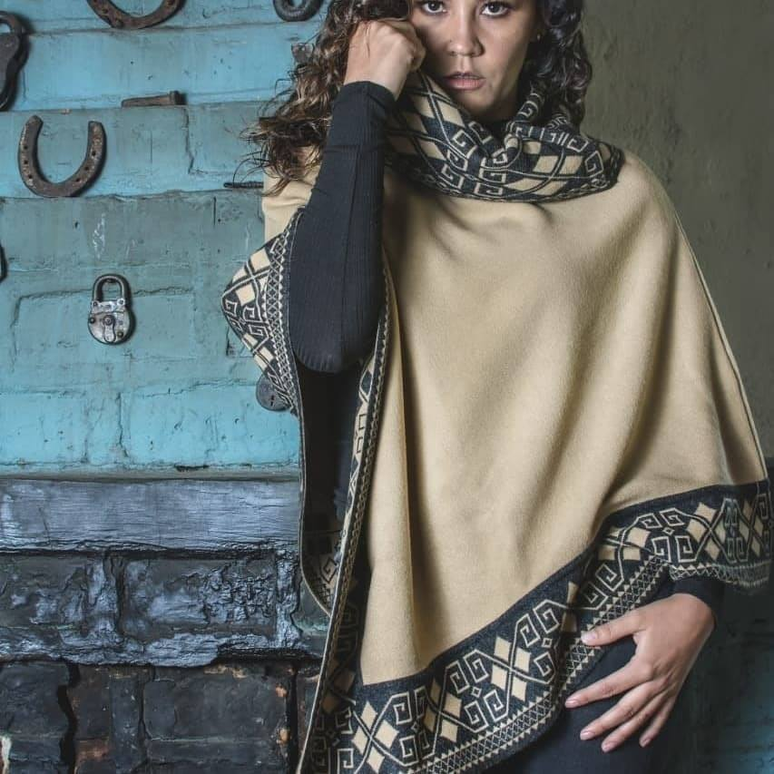

Cinco décadas diseñando ponchos, chales y sacos tejidos en punto — con precisión alemana y cuidado ecuatoriano. Prendas hechas para durar, no para una temporada.

Tejidos Lorena nació en los 70, cuando mis padres empezaron a llevar sus primeras prendas al mercado local.
Lo que empezó como un pequeño puesto fue creciendo con los años. Hoy nuestras prendas viajan a comunidades indígenas de varios países y acompañan a viajeros que se enamoran de lo ecuatoriano.
Creemos en prendas que duran — lo opuesto al fast fashion. Cada poncho, cada chal, cada saco está hecho para quedarse años en tu clóset y volverse mejor con el uso.
Trabajamos principalmente con fibras acrílicas de alta calidad, y también hacemos pedidos personalizados: uniformes, prendas corporativas, colecciones exclusivas para tiendas y, en diciembre, nuestros famosos ugly sweaters.
Elegimos acrílicos de alta gama que se sienten como lana pero aguantan décadas de uso y lavado.
Cada pieza parte de un dibujo. Tomamos motivos andinos tradicionales y los reinterpretamos uno por uno.
En máquinas rectilíneas Stoll de tecnología alemana. Precisión en cada pasada, sin perder el alma del diseño.
Costura, remalle, bordes y revisión — todo hecho a mano. Si no pasa nuestra inspección, no lleva la etiqueta Lorena.